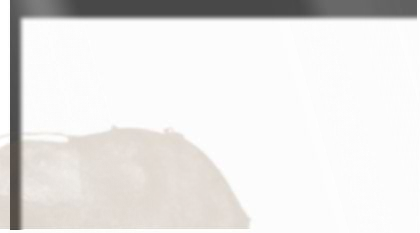
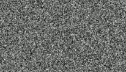
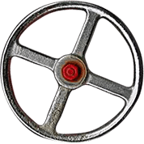

LOADING...


0:00
0:00
Best Time
Recreated By: Logan C.
LOADING...
0:00
0:00
Best Time
Please choose your difficulty level.
Current dificulty level is 6.
Please choose your volume level.
Current volume level is 100.
Enable or disable looping.
HOW TO PLAY:
Choose a video. Enter the URL of any YouTube video (except those that
prevent embedding) and click Load.
Turn the audio and video cranks to make the video play. The higher the
gauges go, the better the quality. Get the needles into the green areas
for peak quality. See how long you can maintain peak quality.
Watch the pressure gauge. You have to click Vent before it maxes out.
Originally Created by:
Wonder-Tonic
Recreated in HTML and Javascript by:
Logan C.
A brief history of this page.
On March 19, 2010 a freelance copywriter and creative director named
Mark Lacher released on his
site Wonder-Tonic a game entitled "Steam-Powered Youtube." For 3 years,
many people enjoyed this game, but it went under my radar until 2013,
when it was
featured in an episode of DONG
(standing for [things you can] Do Online Now, Guys). That video brought
to my attention, and I enjoyed it.
However, the game was made in Flash, and as we all know, in 2021, Adobe
killed Flash, and with it died this game, until now. This page contains
the best recreation of the old Steam-Powered Youtube I can create.
Please check out and support the continuing work of this game's original
developer, at his site
here. However, before you do
that, please, take a moment to enjoy this game, brought back from beyond
the grave, just for you!
Also, if you're interested, you can check out the source code for this
game here!
Credit for the warning bell sound:
Sześcian https://www.youtube.com/watch?v=9CMOkeXBTV4
License for platform.js:
The MIT License.
Thank you so much developers of platform.js!